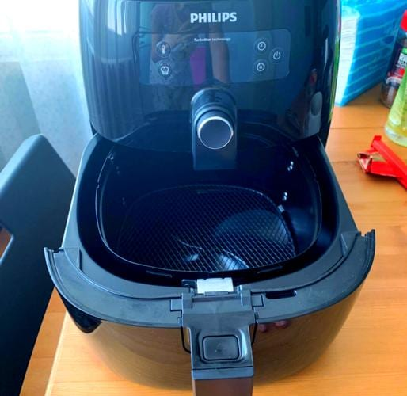

飞利浦 HD9867 空气炸锅

飞利浦大容量空气炸锅的代表机型，约 7.3L 炸篮可整鸡入锅，高速热风循环以少油甚至无油实现酥脆口感。触控面板配多种预设菜单，煎炸烧烤烘焙一机完成，可拆卸不粘炸篮清洗方便，适合追求健康饮食的多口之家。
客观评测
HD9867 采用高速热风循环加热，约 7.3L 炸篮配合约 2000W 功率，温控范围约 40–200 °C。实测薯条、鸡翅上色均匀、外脆里嫩，烤整鸡也能做到表皮酥脆、内部多汁，温度与时间的把控优于小容量入门机型。可拆卸不粘炸篮清洗省力，预设菜单覆盖煎炸烧烤烘焙等场景。机身尺寸较大，需要预留台面与收纳空间。
主观点评
周末用它烤一盘鸡翅、一锅薯条，几乎不用盯着，端出来比外卖还香，而且少了很多油腻感。大容量的好处是人多也不慌，整鸡丢进去等叮的一声就行。它确实占地方，价格也不算亲民，但对想把油炸食品换成健康版本的家庭来说，这种无负担的满足感很难被替代，属于买了以后使用频率很高的厨房电器。
优点与不足
- 大容量炸篮可整鸡、整鱼入锅，家庭聚餐一次搞定
- 热风循环受热均匀，少油也能做出酥脆口感
- 预设菜单丰富，触控操作上手零门槛
- 体积与重量都偏大，小厨房收纳压力明显
- 近三千元的售价在空气炸锅里属于高价段
参数规格
| 类型 | 空气炸锅（大容量） |
|---|---|
| 容量 | 约 7.3 L 炸篮（家庭装） |
| 加热 | 高速热风循环技术 |
| 功率 | 约 2000 W |
| 温控 | 约 40–200 °C 可调 |
| 定时 | 0–60 分钟 |
| 功能 | 煎炸、烧烤、烘焙、解冻、保温 |
| 操控 | 触控面板 + 预设菜单 |
| 内胆 | 可拆卸不粘炸篮，支持洗碗机清洗 |
| 电源 | 220–240 V / 50 Hz |
| 尺寸 | 约 320 × 400 × 320 mm（约） |
| 重量 | 约 7.5 kg（约） |